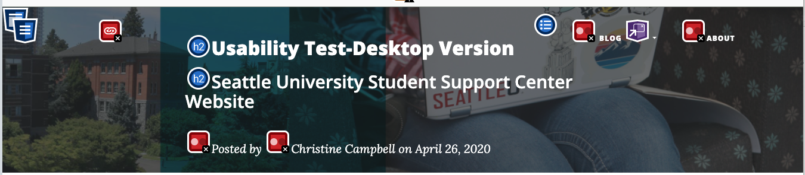
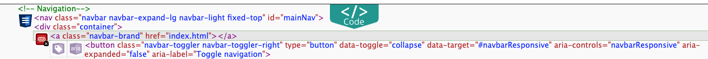
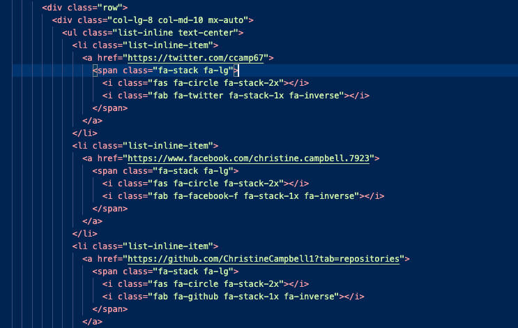
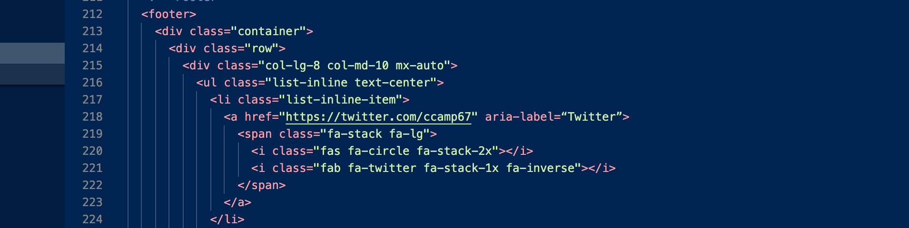
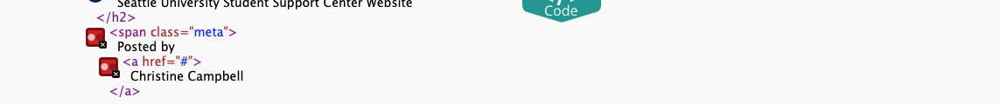
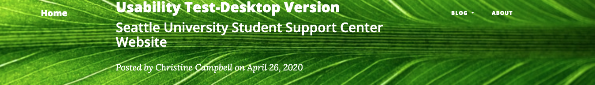

Introduction
This week I turn the tables on myself and take a look at how one page of this User Science Journal looks through the lens of W3C’s Web Content Accessibility Guidelines (WCAG 2.1).
I randomly chose Blog 3 Usability Tests for this evaluation. Based on this review, the webpage is actually pretty close to meeting WCAG 2.1, Conformance Level AA.
Scope of Review
The webpage reviewed is https://www.campbellgroup.live/user-science-christine/post3.html. The web page is written in English. The review was conducted on 5/15/2020.
Purpose of the Site
The purpose of User Science Journal Blog Post 3 is to serve as a way to share my learning and thinking as it pertains to user experience. Blog Post 3 was a write up of a usability test of Seattle University’s Student Support Center, as experienced by desktop users.
Review Process
The review process consisted of reviewing the website through WebAIm’s Web Accessibility Evaluation Tool - WAVE on the accessibility standard of WCAG 2.1. I also manually checked links and forms. The site was evaluated on coding style, assistive attributes, and relative levels of support for different assistive needs.
The evaluation results in this report are based on evaluation conducted on 5/15/2020. I have worked to address the errors after running the evaluation.
Results and Recommended Actions
This website appears to be close to meeting WCAG 2.1 A, AA, AAA.
Most of the accessibility issues are in the masthead area, as shown in the image below, and are a result of content I added or removed.
Resolving Empty Links
An empty link where home navigation should be
Below, highlighted in grey, is the line of code that is missing a link.
My name was originally in that link, but it was too long and getting in the way of the titles so I took it out as I built out the website. Since it’s really meant to bring you home, and my name is already on the page, I decided to insert “Home” in there, which fixed the empty link issue.
Empty links in social media
The remaining empty links are for the social media links in the footer, as shown below, highlighted by the evaluation.
I had been wondering how to add my links to these social media buttons so this was a good time to try to figure it out. I added my personal links to the href line of code, and tested them to make sure they worked. They did!
But when I ran the page through WAVE again, I was still getting blank label messages so with a little help from my instructor, I learned that I needed to add aria labels, like I did here with Twitter in the image below.
When I reran the page through the WAVE checker, I had solved all of my empty links.
Low Contrast Errors
Four low contrast errors in the masthead
All four low contrast errors are in the masthead. I have often been frustrated by the dark overlay in this Bootstrap template on the banner images and I can see how that would make reading the headline even harder for screen readers or people with visual impairments. The code below is an example of how WAVE shows where the low visibility issues are showing up, with red boxes.
In order to fix this, I went into the code for the page header and found the culprit: a div class called overlay. I removed this line of code and it brightened up my banner image.
But when I ran the page through the WAVE checker again, it still showed low visibility. I tried a number of other images, using several color contrast checkers to help me choose a new image, and still kept having low visibilty errors. The best combination suggestion for white font seemed to be a green background. I tried a number of green banner images and still had trouble with WAVE. Ultimately, it appears that WAVE has some trouble checking visibility, so I went with what was suggested by the checkers and used a green background, below.
Conclusion
The website for User Science Journal Blog Post 3 was already built with accessibility in mind. The issues that arose upon evaluation - empty links and low contrast - were the result of my content additions. The fixes took a bit of time to resolve because I had never encountered them before and needed to learn how to repair them. In the future, I can imagine being able to quickly fix them, and probably won't make those errors again, now that I know they cause problems with accessibility.